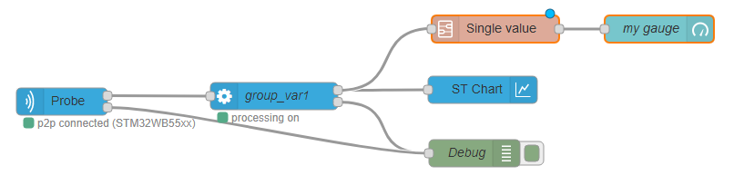

<!--
* module node-red-contrib-stm32cubemonitor
* Copyright(c) 2019 STMicroelectronics
-->
<script type="text/x-red" data-template-name="processing">
  <style>
    .mycontainer {
      display: flex;
      flex-direction: row;
      width:100%;
      justify-content: space-between;
    }

    .colonne-variable {
      flex:1 1;
      margin-right:10px;
      width: calc(100% - 150px);
    }
    .content {
      min-width: 100px;
      border: 1px solid lightgray;
      border-radius: 4px;
    }

    .liste-variable {
      height: 200px;
      overflow-y: auto;
    }
    .liste-function {
      height: 165px;
      overflow-y: auto;
    }
    .liste-variable, .liste-function {
      padding:0px !important;
      margin: 0px !important;
      
    }
    .item{
      list-style: none;
      cursor:pointer;
      user-select: none;
      padding:0px 5px;
      white-space:nowrap;
      text-overflow:ellipsis;
      overflow:hidden;
    }
    .item:hover{
      background-color:var(--nr-db-light-text);
    }

    #select-function{
      width:auto;
      padding-left:0px
    }
    #node-input-formula {
      resize:vertical;
    }
    .output-list {
      margin: 0!important;
      min-width: 100px;
      border: 1px solid lightgray;
      border-radius: 4px;
      min-height:150px;
      overflow-y:auto;
    }
    .output-item {
      list-style:none;
      padding:0px 10px;
      border-bottom: 1px solid lightgray;
      display: flex;
      justify-content: space-between;
    }

    .expression,.statistic {
      cursor:pointer;
      user-select: none;
    }
    .expression:hover,.statistic:hover {
      background-color:var(--nr-db-light-text);
    }
    .output-item:last-child {
      border:0;
    }

    .remove-button {
      height: 15px;
      min-width: 15px;
      line-height: 15px;
      font-size: 10px;
      border-radius: 2px;
      padding: 0 2px;
      border:1px solid #ccc;
      color:#444;
      margin-left:10px;
  }

    .remove-button:not(.disabled):not(:disabled):hover {
      color: #666 !important;
      background: #ddd;
    }

    .remove-button:not(.disabled):not(:disabled):active {
      color: #666 !important;
      background: #efefef;
      text-decoration: none;
    }
    .remove-button.disabled {
      cursor: default;
      color: #ccc !important;
  }
  .statitem {
    flex: 1 1 25%;
  }

  .no-close .ui-dialog-titlebar-close {
    display: none;
  }
  .operation-tooltip {
    font-size:12px;
  }
  </style>
  <div class="form-row">
    <label for="node-input-groupname" style="width: 135px;"><i class="fa fa-tag"></i> Group Name </label>
    <select type="text" id="node-input-groupname" style="width:calc(100% - 140px);" previousValue=""></select>
    <input type="hidden" id="node-input-outputs" value="1" />
    <div class="hide" id="node-dialog-confirm-change-group">
      <p><strong>Warning:</strong> Changing the variable group, will also reset the post-processing Expression & Statistics variables. This action cannot be undone. Are you sure?</p>
  </div>
  </div>
  <div class="form-row">
    <label for="node-input-logmode" style="width: 135px;"><i class="fa fa-dot-circle-o"></i> Log option </label>
    <select type="text" id="node-input-logmode" style="width:calc(100% - 140px);">
      <option value="no">No log</option>
      <option value="full">Log all values</option>
      <option value="changes">Log only changes</option>
    </select>
  </div>
  <div class="form-row">
    <label style="width: 135px;"> </label>
    <label for="node-input-logformat" style="width: 135px;"><i class="fa fa-file-text-o"></i> Log format </label>
    <select type="text" id="node-input-logformat" style="width:calc(100% - 280px);">
      <option value="stcm">stcm</option>
      <option value="csv">csv (one column)</option>
      <option value="csvc">csv (multiple columns)</option>
    </select>
  </div>
  <div class="form-row" id="output-container">
    <label style="width:auto;"><i class="fa fa-list-ol"></i> Outputs </label>
    <ul class="output-list">
    </ul>
  </div>


  <div id="post-processing">
      <div class="red-ui-palette-header">
          <i class="fa fa-angle-down expanded"></i><span>Post-processing</span>
      </div>
      <div class="section-content" style="padding: 10px 0px 0px 10px; display: block;">
          <div class="form-row">
              <ul style="background: #fff; min-width: 600px; margin-bottom: 20px;" id="node-input-calculation-tabs"></ul>
            </div>
            <div id="node-input-calculation-tabs-content" style="min-height: 170px;">
              <div id="calculation-tab-expression" style="display:none">
                <div class="form-row">
                  <label for="node-input-expression-name" style="width:auto;"><i class="fa fa-sign-in"></i> Expression name </label>
                  <input type="text" id="node-input-expression-name" style="width:100%" required placeholder="a-z,A-Z,0-9,_" pattern="[0-9A-Za-z_]+"></input>
                  <input type="hidden" id="selectedExpressionIndex" value="notselected"/>
                </div>
                <div class="form-row">
                  <label for="node-input-formula" style="width:auto;"><i class="fa fa-cogs"></i> Formula </label>
                  <textarea name="node-input-formula" id="node-input-formula" rows="2" style="width:100%" placeholder="e.g.: variable1*sin(variable2)" required></textarea>
                  <a href="#" id="add-formula" class="red-ui-button red-ui-button-small" style="margin-top: 4px;"><i class="fa fa-plus"></i> add</a>
                  <a href="#" id="clear-expression" class="red-ui-button red-ui-button-small" style="margin-top: 4px;"><i class="fa fa-eraser"></i> cancel</a>
                </div>
                
                <div class="mycontainer">
                  <div class="colonne-variable"><label><i class="fa fa-list-alt"></i> Possible variables in formula (click to insert)</label>
                        <ul class="content liste-variable"></ul>
                  </div>
                  <div><label><i class="fa fa-subscript"></i> Operations</label>
                      <select id="select-function">
                        <option value="mathematical">Mathematical</option>
                        <option value="bitwise">Bitwise</option>
                        <option value="trigonometry">Trigonometry</option>
                        <option value="logical">Logical</option>
                      </select>
                      <ul class="content liste-function"></ul>
                  </div>
                </div>
              </div>
              <div id="calculation-tab-statistic">
                <div class="form-row">
                  <label style="width:120px;" for="node-input-statistic-name"><i class="fa fa-sign-in"></i> Statistic name </label>
                  <input style="width:calc(100% - 125px);" type="text" id="node-input-statistic-name" placeholder="a-z,A-Z,0-9,_" required pattern="[0-9A-Za-z_]+">
                </div>
                <div class="form-row">
                  <label style="width:120px;" for="select-statistic-variable"><i class="fa fa-list-alt"></i> Variable </label>
                  <select style="width:calc(100% - 125px);" id="select-statistic-variable" required>
                  </select>
              </div>
                <div class="form-row">
                  <label style="width:120px;" for="select-statistic-function"><i class="fa fa-cogs"></i> Function </label>
                  <select style="width:calc(100% - 125px);" id="select-statistic-function">
                    <option value="min">Min</option>
                    <option value="max">Max</option>
                    <option value="mean">Average</option>
                    <option value="std">Std_Dev</option>
                  </select>
                </div>
                <div class="form-row">
                  <label style="width:120px;" for="statistic-scope"><i class="fa fa-dot-circle-o"></i> Scope </label>
                  <input style="width:calc(100% - 125px);" type="text" id="statistic-scope">
                </div>
                <a href="#" id="add-statistic" class="red-ui-button" style="margin-top: 4px; width:calc(100% - 44px);"><i class="fa fa-plus"></i> add statistic</a>
                <a href="#" id="clear-statistic" class="red-ui-button" style="margin-top: 4px; width:40px;"><i class="fa fa-undo"></i></a>
                <input type="hidden" id="selectedStatisticIndex" value="notselected"/>

              </div>


      </div>
  </div>


  </div>
</script>

<script type="text/x-red" data-help-name="processing">
    <p>Transform each input message representing one measurement of a group of variables into one message every 50 ms per variable containing one or several duplets (x and y). 
      It is also possible to define expressions and statistics based on those individual measurements and log options.</p><br>
    <h3>Properties</h3>
    <dl class="message-properties">
      <dt>Group Name<span class="property-type">Pick List</span></dt>
      <dd>Name of the variables nodes to be processed.</dd>
      <dt>Log data<span class="property-type">Pick List</span></dt>
      <dd>The acquisition is recorded in the file system on server side under a predefined directory path.
      <br>The recorded data are stored in at least one file. If needed several files of maximum 100MB size each are created to store all the data for a single acquisition.The log files names follow the following convention : "Log_groupname_timestamp.extension". Extension depends on choosen log format.
      <br>The number of generated files for one acquisition will be therefore related to :
        <ul>
          <li> Number of monitored variables.</li>
          <li> Acquisition frequency.</li>
          <li> Log type ( all values or only changes ).</li>
        </ul>
        For example :
        <ul>
          <li>1 generated file for an acquisition of  1 variable during 25 hours at 10 Hz.</li>
            <li>4 generated files for an acquisition of 10 variables during 2 hours with an ST LINK V3 in sequential loop. </li>
      </ul>
        The directory path where you can find the log files could be configured in settings.js file ( default path is  home directory / log ).
      </dd>
      <dd>Log mode selection:</dd>
      <ul>
        <li>
          <code>No log </code> Values are not logged.
        </li>
        <li>
          <code>Log all values </code> All the values read are logged.
        </li>
        <li>
          <code>Log only changes </code> Only the changes for each variable are logged.
        </li>
      </ul>
      <dd>Log format selection:</dd>
      <ul>
        <li>
          <code>stcm </code> Log in a proprietary json like format.
        </li>
        <li>
          <code>csv (one column)</code> Log in a csv (comma-separated values) format.
        </li>
        <li>
          <code>csv (multiple columns) </code> Log in a csv format with variables organized in columns.
        </li>
      </ul>
      <dt>Outputs<span class="property-type">List</span></dt>
      <dd>List summarizing the variables and post-processing data which will have there specific messages sent on the node output. From this list it is possible to remove (by using the "cross" button) or edit (by clicking on the line) a post-processing output.</dd>
    </dl>
    <dl class="message-properties">
        <dt>Post-processing<span class="property-type">Expression | Statistic</span></dt>
        <dd>It is possible to add some outputs by doing some post processing calculation on variables.
          <dl class="message-properties">
            <dt>Expression</dt>
            <dd>Expression variables are the result of a mathematical expression evaluation. An expression is the combination of standard (coming from "variables" node) or statistical variables 
              and mathematical operators (+,-,*, /…). Note that expression variables are evaluated after statistical variables, thus it is not possible to compute statistics on expressions.
              <dl class="message-properties">
                <dt>Expression name <span class="property-type">string</span></dt>
                <dd>The name of the expression to be addedd in output list</dd>
                <dt>Formula <span class="property-type">string</span></dt>
                <dd>A string representing a mathematical formula. The validity of the formula is checked once "+ add" button is clicked.</dd>
                <dt>Possible variables in formula <span class="property-type">Pick List</span></dt>
                <dd>The "Possible variables in formula" field could be used to write out the formula. By clicking on a line, the corresponding variable is automatically inserted in formula field.</dd>
                <dt>Operations <span class="property-type">Pick List</span></dt>
                <dd>The first field allows to select the operation category among <code>Mathematical</code>, <code>Trigonometry</code>, or <code>Logical</code>.</dd>
                <dd>The second field is the list of operations. By clicking on a line, the corresponding operation is automatically inserted in formula field.</dd>
              </dl>
            </dd>
          </dl>
          <dl class="message-properties">
            <dt>Statistic</dt>
            <dd>Statistical variables can compute values like min, max, average and standard deviation of standard variables (coming from "variables" node).
              <dl class="message-properties">
                <dt>Statistic name <span class="property-type">string</span></dt>
                <dd>The name of the statistic to be added in output list and in "Possible variables in formula" field</dd>
                <dt>Variable <span class="property-type">string</span></dt>
                <dd>A string representing a mathematical formula. The validity of the formula is checked once "+ add" button is clicked.</dd>
                <dt>Possible variables in formula <span class="property-type">Pick List</span></dt>
                <dd>The "Possible variables in formula" field could be used to write out the formula. By clicking on a line, the corresponding variable is automatically inserted in formula field.</dd>
                <dt>Operations <span class="property-type">Pick List</span></dt>
                <dd>The first field allows to select the operation category among <code>Mathematical</code>, <code>Bitwise</code>, <code>Trigonometry</code> or <code>Logical</code>.</dd>
                <dd>The second field is the list of operations. By clicking on a line, the corresponding operation is automatically inserted in formula field.</dd>
              </dl>
            </dd>
          </dl>
        </dd>
    </dl>
    <h3>Input</h3>
    <dl class="message-properties">
        <dt>payload<span class="property-type">object</span></dt>
        <dd>payload is an object representing the variables measurement. The payload object holds several properties:
        <ul>
          <li><code>first</code> boolean, true when this is the first measurement after a start to allow creation of a new log file. </li>
          <li><code>groupname</code> string, representing the name of the selected "variables" node </li>
          <li><code>data</code> array of duplet, each representing a target memory access. The index of the duplets in the array, is the same as the order of the variables in "Variable list" field of "variables" node</li>
            <ul>
              <li><code>x</code> number, the value read from memory target</li>
              <li><code>y</code> number, the timestamp at which the value has been read</li>
            </ul>
        </ul>
      </dd>
    <p>The following example shows an input <code>msg</code> for processing node:</p>
    <pre>
        {
          "payload": {
            "data": [
              [
                {
                  "y": 0,
                  "x": 1559722981321
                }
              ],
              [
                {
                  "y": 0,
                  "x": 1559722981321
                }
              ],
              [
                {
                  "y": 463,
                  "x": 1559722981321
                }
              ],
              [
                {
                  "y": 2048,
                  "x": 1559722981321
                }
              ]
            ],
            "first": true,
            "groupname": "nv_group2"
          },
        }
    </pre><br>
    <dt>topic<span class="property-type">object</span></dt>
    <dd>A message with <code>topic</code> set to <code>clear</code> will reset the log timestamp to zero.</dd>
    </dl><br>

    <h3>Output</h3>
    <p>Two outputs are defined, one port labelled <code>data</code> for the measurement and one labelled <code>error</code>.</p>
    <p>The <code>error</code> output <code>msg.payload</code> is the error message string, the <code>msg.topic</code> defines the error level. </p>
    <p>for <code>data</code> output <code>msg.payload</code> is an object representing the variable measurements. </p>
    <p>For each variable, expression, and statistic, the  <code>msg</code> object holds:</p>
    <dl class="message-properties">
      <dt>topic<span class="property-type">string</span></dt>
      <dd>The <code>topic</code> value is set to <code>data</code>.
      <dt>payload<span class="property-type">object</span></dt>
      <dd>The <code>payload</code> is an object representing a set of measurement for a single  variable from one group :
        <ul>
          <li><code>groupname</code> string, the name of the group the <code>variabledata</code> is referring to.</li>
          <li><code>variablename</code> string, the variable name the <code>variabledata</code> is referring to.</li>
          <li><code>variabledata</code> array of duplets</li>
          <ul>
            <li>each duplet object represents a single measurement and holds :</li>
            <ul>
              <li><code>x</code> number, representing the timestamp</li> 
              <li><code>y</code> number, representing the read value in memory target</li>
            </ul>
          </ul>
        </ul>
      </dd>
    
    <p>The following example shows an output <code>msg</code> for a processing node :</p>
    <pre>
        {
          "topic":"data",
          "payload":
          {
            "groupname": "groupname1",
            "variablename": "var1",
            "variabledata": [
              {
                "x": "0",
                "y": "1231"
              },
              {
                "x": "1",
                "y": "12"
              },
              {
                "x": "2",
                "y": "1565"
              }
            ]
          }
        }
    </pre>
    </dl><br>
    
    <h3>Details</h3>
    <p>The processing node is designed to be typically : </p>
    <ul>
      <li>front linked with an acquisition in node</li>
      <p><b>Warning: front link <code>processing</code> node with only one <code>acquisition</code> in node ! </b>
        Using the same <code>variable</code> node to send configuration to several <code>acquisition out</code> nodes and linking the different <code>acquisition in</code> nodes to only one <code>processing</code> node leads to mixing the data coming from different probes as there is no 
        discriminating information.</p>
        
        
      <li>back linked with a STChart node or a 'single value' subflow node.</li>
    </ul>
    
</script>

<script type="text/javascript">
  (function () {
    let candidateNodes, groupindex, port, fullVariableList;
    RED.nodes.registerType('processing', {
      category: "STMicroelectronics",
      color: '#3cb4e6',
      defaults: {
        groupname: { value: "", required: true },
        groupid: { value: {} },
        expressions: {
          value: []
        },
        statistics: {
          value: []
        },
        logmode: { value: "no" },
        logformat: { value: "stcm" },
      },
      inputs: 1,
      outputs: 2,
      icon: "font-awesome/fa-cog",
      label: function () {
        return this.groupname || "processing";
      },
      labelStyle: function () {
        return this.groupname ? "node_label_italic" : "";
      },
      outputLabels: ["data","error"],

      oneditprepare: function () {
        if (this.logformat===undefined) {
          $('#node-input-logformat').val("stcm")
          this.logformat="stcm";
        }
        HTMLTextAreaElement.prototype.insertAtCaret = function (text) {
          text = text || '';
          if (document.selection) {
            // IE
            this.focus();
            var sel = document.selection.createRange();
            sel.text = text;
          } else if (this.selectionStart || this.selectionStart === 0) {
            // Others
            var startPos = this.selectionStart;
            var endPos = this.selectionEnd;
            this.value = this.value.substring(0, startPos) +
              text +
              this.value.substring(endPos, this.value.length);
            this.selectionStart = startPos + text.length;
            this.selectionEnd = startPos + text.length;
          } else {
            this.value += text;
          }
          this.focus();
        };
        let node = this;
        port = 0;
        candidateNodes = RED.nodes.filterNodes({ type: "variables" });
        let currentvalue = this.groupname;
        let select = $("#node-input-groupname");
        //Use prop if supported, otherwise use attr
        if (select.prop) {
          var options = select.prop('options');
        }
        else {
          var options = select.attr('options');
        }
        $('option', select).remove();
        options[options.length] = new Option("Please select...", "", true, true);
        options[0].disabled = true;
        candidateNodes.forEach(function (e) {
          options[options.length] = new Option(e.groupname, e.groupname);
        })
        // as the options list has been updated thanks to ajax request, 
        // set back the selected option to previous value 
        if (currentvalue) $("#node-input-groupname").val(currentvalue);

        select.change(function (e) {
          let selectedgroup = $(this).val();
          if (selectedgroup) {
            if ($(this).attr('previousValue').length > 0 && document.querySelector(".output-list>li.output-item.expression,.statistic")) {
              $("#node-dialog-confirm-change-group").dialog("open");
            } else {
              updateOutputList();
            }
          }
        });

        $("#node-dialog-confirm-change-group").dialog({
          dialogClass: "no-close",
          title: "Change variable group",
          autoOpen: false,
          width: 550,
          height: "auto",
          modal: true,
          closeOnEscape: false,
          buttons: [{
            id: "bt-cancel",
            text: "Cancel",
            click: function () {
              $("#node-input-groupname").val($("#node-input-groupname").attr('previousValue'));
              $(this).dialog("close");
            }
          },
          {
            id: "bt-confirm",
            text: "OK",
            class: "primary",

            click: function () {
              updateOutputList();
              $(this).dialog("close");
            }
          }
          ]
        });

        function updateOutputList() {
          port = 0;
          let selectedgroup = $("#node-input-groupname").val();
          $("#node-input-groupname").attr('previousValue', selectedgroup);
          groupindex = candidateNodes.findIndex(function (e) {
            return e.groupname == selectedgroup;
          });
        
          //cleanup output list
          let oldlistsummary = document.querySelectorAll(".output-list .output-item");
          let ulsummary = document.querySelector(".output-list");
          oldlistsummary.forEach(c => ulsummary.removeChild(c));

          // cleanup possible variable list in expression section
          let oldlist = document.querySelectorAll(".liste-variable .item");
          let ul = document.querySelector(".liste-variable");
          oldlist.forEach(c => ul.removeChild(c));

          // cleanup  variable option in select field in expression section
          let select = document.getElementById("select-statistic-variable");
          select.options.length = 0;
          let selectedConfigVariables = [];
          if (candidateNodes[groupindex].execonfig && candidateNodes[groupindex].execonfig !== "_ADD_") {
            selectedConfigVariables = RED.nodes.node(candidateNodes[groupindex].execonfig).exevariablelist.filter(elem => elem.checked);
          }
          // Remove from manual variablelist variable having the same name than the ones imported 
          this.variablelist = candidateNodes[groupindex].variablelist.filter(elem => {
            return selectedConfigVariables.findIndex(i => i.name === elem.name) === -1;
          });
     
          fullVariableList = selectedConfigVariables.concat(this.variablelist);
      
          // update both ul with new variables from new selected group 
          fullVariableList.forEach(variable => {
            port += 1;
            // Add an li element such as :
            //  <li class="output-item">Variable1 <span style="float: right;"> → 1
            //   <a href="#" class="remove-button"><i class="fa fa-remove"></i></a></span>
            // </li>
            let summaryItem = document.createElement("li");
            summaryItem.setAttribute("class", "output-item");
            let d = document.createElement("div");
            d.setAttribute("style", "overflow:hidden; text-overflow:ellipsis;");
            d.appendChild(document.createTextNode(variable.name));
            summaryItem.appendChild(d);
            let span = document.createElement("span");
            span.appendChild(document.createTextNode(" → " + port));
            span.setAttribute("style", "flex: 0 0 auto");
            let a = document.createElement("a");
            a.setAttribute("href", "#");
            a.setAttribute("class", "remove-button disabled");
            let i = document.createElement("i");
            i.setAttribute("class", "fa fa-remove");
            a.appendChild(i);
            span.appendChild(a);
            summaryItem.appendChild(span);
            ulsummary.appendChild(summaryItem);

            // then update the list of possible variables to be used in expression formula section
            let li = document.createElement("li");
            li.appendChild(document.createTextNode(variable.name));
            li.setAttribute("class", "item");
            li.addEventListener('click', (e) => {
              let myElement = document.getElementById('node-input-formula');
              myElement.insertAtCaret(e.target.innerText)
            });
            ul.appendChild(li);

            // and finally update the list of possible variables to be used in statistic section
            let option = document.createElement("option");
            option.text = variable.name;
            select.add(option, null);
          });
        }

        function resizeOutputsContainer() {
          let rows = $("#dialog-form>div:not(#output-container)");
          let height = $("#dialog-form").height();
          for (let i = 0; i < rows.size(); i++) {
            height -= $(rows[i]).outerHeight(true);
          }
          let editorRow = $("#dialog-form>div#output-container");
          height -= (parseInt(editorRow.css("marginTop")) + parseInt(editorRow.css("marginBottom"))) + 25;
          $("#output-container>ul").height(height);
        }
        // Create and manage tab sheets
        var tabs = RED.tabs.create({
          id: "node-input-calculation-tabs",
          onchange: function (tab) {
            $("#node-input-calculation-tabs-content").children().hide();
            $("#" + tab.id).show();
            resizeOutputsContainer();
          }
        });

        tabs.addTab({
          id: "calculation-tab-expression",
          label: "Expression"
        });
        tabs.addTab({
          id: "calculation-tab-statistic",
          label: "Statistic"
        });
        // custom type in statistic sheet
        $('#statistic-scope').typedInput({
          default: 'all',
          types: [{
            value: "all",
            label: "All points",
            hasValue: false
          },
          {
            value: "last",
            types: "num",
            label: "On last :",
            validate: /^[1-9][0-9]*?$/

          }
          ],
        });

        function updateExpression(that) {
          let i = 0, j = 0;
          while (i < that.expressions.length || j < that.statistics.length) {
            let exp = that.expressions[i];
            let stat = that.statistics[j];

            let expIndex = exp ? Number(exp.index) : Number.POSITIVE_INFINITY;
            let statIndex = stat ? Number(stat.index) : Number.POSITIVE_INFINITY;

            if (expIndex < statIndex) {
              createExpressionInDom(exp.formula, exp.name);
              i++;
            } else {
              createStatisticInDom(stat.name, stat.variable, stat.statistic, stat.scope);
              j++;
            }
          }
        }
        document.getElementById("select-function").addEventListener("change", (e) => {
          $(".liste-function .item").tooltip("close");
          let oldlist = document.querySelectorAll(".liste-function .item");
          let ul = document.querySelector(".liste-function");
          oldlist.forEach(c => ul.removeChild(c));
          const availableFunction = {
            mathematical: [
              ["+","<b><u>Add two values</u><br>Syntax:</b> x + y<br><b>Example:</b> 4 + 5 = 9"],
              ["-","<b><u>Subtract two values</u><br>Syntax:</b> x - y<br><b>Example:</b> 7 - 3  = 4"],
              ["*", "<b><u>Multiply two values</u><br>Syntax:</b> x * y<br><b>Example:</b> 2 * 3  = 6"],
              ["/", "<b><u>Divide two values</u><br>Syntax:</b> x / y<br><b>Example:</b> 6 / 2 = 3"],
              ["%", "<b><u>The modulus, the remainder of an integer division</u><br>Syntax:</b> x % y<br><b>Example:</b> 8 % 3 = 2"],
              ["mod", "<b><u>The modulus, the remainder of an integer division</u><br>Syntax:</b> x mod y<br><b>Example:</b> 8 mod 3	= 2"],
              ["^", "<b><u>The power of x to y</u><br>Syntax:</b> x ^ y<br><b>Example:</b>2 ^ 3 = 8"],
              ["!", "<b><u>The factorial of the value</u><br>Syntax:</b> x!<br><b>Example:</b> 5! = 120"],
              ["abs()", "<b><u>Absolute value of a value</u><br>Syntax:</b> abs(x)<br><b>Example:</b> abs(-5) = 5"],
              ["cbrt()", "<b><u>Cubic root of a value</u><br>Syntax:</b> cbrt(x)<br><b>Example:</b> cbrt(27) = 3"],
              ["ceil()", "<b><u>Round a value towards plus infinity</u><br>Syntax:</b> ceil(x)<br><b>Examples:</b> ceil(3.2) = 4, ceil(-4.2) = -4"],
              ["exp()", "<b><u>Exponent of the value</u><br>Syntax: exp(x)<br><b>Examples:</b> exp(1) = 2.718281828459045, exp(2)=7.3890560989306495"],
              ["expm1()", "<b><u>The value of subtracting 1 from the exponential value</u><br>Syntax:</b> expm1(x)<br><b>Example:</b> expm1(1)= 1.718281828459045"],
              ["fix()", "<b><u>Round a value towards zero</u><br>Syntax:</b> fix(x)<br><b>Examples:</b> fix(3.2) = 3, fix(-4.2) = -4"],
              ["floor()", "<b><u>Round a value towards minus infinity</u><br>Syntax:</b> floor(x)<br><b>Examples:</b> floor(3.2) = 3, floor(-4.2) = -5"],
              ["hypot()", "<b><u>The hypotenusa of a list with values</u><br>Syntax:</b> hypot(a, b, c, ...) = sqrt(a^2 + b^2 + c^2 + ...)<br><b>Example:</b> hypot(3, 4) = 5, hypot(3, 4, 5) = 7.0710678118654755"],
              ["log()", "<b><u>The logarithm of a value</u><br>Syntax:</b> log(x [, base])<br><b>Examples:</b> log(3.5) = 1.252762968495368, log(10000, 10) = 4"],
              ["log10()", "<b><u>The 10-base logarithm of a value</u><br>Syntax:</b> log10(x)<br><b>Example:</b> log10(10000) = 4"],
              ["max()", "<b><u>The maximum value of a list of values</u><br>Syntax:</b> max(a, b, c, ...)<br><b>Example:</b> max(2, 1, 4, 3) = 4"],
              ["min()", "<b><u>The minimum value of a list of values</u><br>Syntax:</b> min(a, b, c, ...)<br><b>Example:</b> min(2, 1, 4, 3) = 1"],
              ["pow()", "<b><u>The power of x to y</u><br>Syntax:</b> pow(x,y)<br><b>Example:</b> pow(2, 3) = 8"],
              ["random()", "<b><u>A random number larger or equal to min and smaller than max using a uniform distribution</u><br>Syntax:</b> random([min [, max]])<br><b>Examples:</b> random() returns a random number between 0 and 1, random(100) returns a random number between 0 and 100, random(30, 40) returns a random number between 30 and 40"],
              ["round()", "<b><u>Round a value towards the nearest integer</u><br>Syntax:</b> round(x [, n])<br><b>Examples:</b> round(3.2) = 3, round(3.8) = 4, round(-4.2) = -4"],
              ["sign()", "<b><u>The sign of a value x: 1 when x>0, -1 when x<0, 0 when x==0</u><br>Syntax:</b> sign(x)<br><b>Example:</b> sign(3.5) = 1, sign(-4.2) = -1"],
              ["sqrt()", "<b><u>The square root of a value</u><br>Syntax:</b> sqrt(x)<br><b>Example:</b> sqrt(16)=4"]],
            bitwise : [
              ["&","<b><u>Bitwise and</u><br>Syntax:</b> x & y<br><b>Example:</b> 5 & 3	 = 1"],
              ["|","<b><u>Bitwise or</u><br>Syntax:</b> x | y<br><b>Example:</b> 5 | 3	 = 7"],
              ["^|","<b><u>Bitwise xor</u><br>Syntax:</b> x ^| y<br><b>Example:</b> 5 ^| 2 = 7"],
              ["~","<b><u>Bitwise not</u><br>Syntax:</b> ~x<br><b>Example:</b> ~2 = -3"],
              ["<<","<b><u>Bitwise left shift</u><br>Syntax:</b> x << y<br><b>Example:</b> 4 << 1 = 8"],
              [">>","<b><u>Bitwise right arithmetic shift</u><br>Syntax:</b> x >> y<br><b>Example:</b> 8 >> 1 = 4"],
              ["readBit_n(a,n)","<b><u>Bitwise a & (1 << n)</u><br>Syntax:</b>readBit_n(a,n)<br><b>Example:</b>readBit_n(12,2) = 4"],
              ["setTo0Bit_n(a,n)","<b><u>Bitwise a & ~(1 << n)</u><br>Syntax:</b>setTo0Bit_n(a,n)<br><b>Example:</b>setTo0Bit_n(12,2) = 8"],
              ["setTo1Bit_n(a,n)","<b><u>Bitwise a | (1 << n)</u><br>Syntax:</b>setTo1Bit_n(a,n)<br><b>Example:</b>setTo0Bit_n(12,2) = 12"]],
            logical: [
              ["and", "<b><u>Logical and</u><br>Syntax:</b> x and y<br><b>Example:</b> true and false = false"],
              ["not", "<b><u>Logical not</u><br>Syntax:</b> not x<br><b>Example:</b> not true = false"],
              ["or", "<b><u>Logical or</u><br>Syntax:</b> x or y<br><b>Example:</b> true or false = true"],
              ["xor", "<b><u>Logical or</u><br>Syntax:</b> x xnode-redor y<br><b>Example:</b> true xor true = false"],
              ["=", "<b><u>Assignement</u><br>Syntax:</b> x = y<br><b>Example:</b> x = 5"],
              ["? :", "<b><u>Conditional expression</u><br>Syntax:</b> x ? y : z<br><b>Example:</b> (15 > 100 ? 1 : -1)  returns -1"],
              ["==", "<b><u>Equal</u><br>Syntax:</b> x == y<br><b>Examples:</b> 15 == 14 returns false, 5 == 5 returns true"],
              ["!=", "<b><u>Unequal</u><br>Syntax:</b> x != y<br><b>Examples:</b> 15 != 14 returns true, 5 != 5 returns false"],
              ["<", "<b><u>Smaller</u><br>Syntax:</b> x < y<br><b>Examples:</b> 15 < 14 returns false, 5 < 5 returns false, 4 < 5 returns true"],
              [">", "<b><u>Greater</u><br>Syntax:</b> x > y<br><b>Examples:</b> 15 > 14 returns true, 5 > 5 returns false, 4 > 5 returns false"],
              ["<=", "<b><u>Smaller or equal</u><br>Syntax:</b> x <= y<br><b>Examples:</b> 15 <= 14 returns false, 5 <= 5 returns true, 4 <= 5 returns true"],
              [">=", "<b><u>Greater or equal</u><br>Syntax:</b> x >= y<br><b>Examples:</b> 15 >= 14 returns true, 5 >= 5 returns true, 4 >= 5 returns false"]],
            trigonometry: [
              ["acos()","<b><u>The inverse cosine of a value</u><br>Syntax:</b> acos(x)<br><b>Example:</b> acos(0.5) = 1.0471975511965979"],
              ["acosh()", "<b><u>The hyperbolic arccos of a value, defined as acosh(x) = ln(sqrt(x^2 - 1) + x)</u><br>Syntax:</b> acosh(x)<br><b>Example:</b> acosh(1.5) = 0.9624236501192069"],
              ["asin()","<b><u>The inverse sine of a value</u><br>Syntax:</b> asin(x)<br><b>Example:</b> asin(0.5) = 0.5235987755982989"],
              ["asinh()","<b><u>The hyperbolic arcsine of a value, defined as asinh(x) = ln(x + sqrt(x^2 + 1))</u><br>Syntax:</b> asinh(x)<br><b>Example:</b> asinh(0.5) = 0.48121182505960347"],
              ["atan()", "<b><u>The inverse tangent of a value</u><br>Syntax:</b> atan(x)<br><b>Example:</b> atan(0.5) = 0.4636476090008061"],
              ["atanh()", "<b><u>The hyperbolic arctangent of a value, defined as atanh(x) = ln((1 + x)/(1 - x)) / 2</u><br>Syntax:</b> atanh(x)<br><b>Example:</b> atanh(0.5) = 0.5493061443340549"],
              ["atan2()", "<b><u>The inverse tangent function with two arguments, y/x. By providing two arguments, the right quadrant of the computed angle can be determined</u><br>Syntax: atan2(y,x) with y second dimension and x first dimension<br><b>Example:</b> atan2(2, 2) = 0.25 * pi"],
              ["cos()", "<b><u>The cosine of a value</u><br>Syntax:</b> cos(x)<br><b>Example:</b> cos(2) = -0.4161468365471422"],
              ["cosh()", "<b><u>The hyperbolic cosine of a value, defined as cosh(x) = 1/2 * (exp(x) + exp(-x))</u><br>Syntax:</b> cosh(x)<br><b>Example:</b> cosh(0.5) = 1.1276259652063807"],
              ["sin()", "<b><u>The sine of a value</u><br>Syntax:</b> sine(x)<br><b>Example:</b> sine(2) = 0.9092974268256813"],
              [ "sinh()", "<b><u>The hyperbolic sine of a value, defined as sinh(x) = 1/2 * (exp(x) - exp(-x))</u><br>Syntax:</b> sinh(x)<br><b>Example:</b> sinh(0.5) = 0.5210953054937474"],
              ["tan()", "<b><u>The tangent of a value</u><br>Syntax:</b> tan(x)<br><b>Example:</b> tan(0.5) = 0.5463024898437905"],
              ["tanh()", "<b><u>The hyperbolic tangent of a value, defined as tanh(x) = (exp(2 * x) - 1) / (exp(2 * x) + 1)</u><br>Syntax:</b> tan(x)<br><b>Example:</b> tanh(0.5) =  0.46211715726000974"]]
          }
          const selectedCategory = e.target.value;
          availableFunction[selectedCategory].forEach(([op,help]) => {
            let li = document.createElement("li");
            li.appendChild(document.createTextNode(op));
            li.setAttribute("class", "item");
            li.setAttribute("title",op)
            li.dataset.operand=op;
            li.addEventListener('click', (e) => {
              let formula = document.getElementById('node-input-formula');
              console.log(e.target.dataset.operand);
              formula.insertAtCaret(e.target.dataset.operand);
            });
            ul.appendChild(li);
            $(".liste-function .item").last().tooltip({
              content: help,
              classes: {"ui-tooltip-content": "operation-tooltip"}
              });
          })
        });

        document.getElementById("select-function").dispatchEvent(new Event('change'));

        document.getElementById("clear-expression").addEventListener("click", _ => {
          document.getElementById("node-input-formula").value = "";
          document.getElementById("node-input-expression-name").value = "";
          document.getElementById("selectedExpressionIndex").value = "notselected";
          $("#add-formula").html('<i class="fa fa-plus"></i> add');
        });

        document.getElementById("add-formula").addEventListener("click", _ => {
          let name = document.getElementById("node-input-expression-name");
          let formula = document.getElementById("node-input-formula");
          if (name.value.length == 0) {
            name.focus();
            return;
          }
          if (formula.value.length == 0) {
            formula.focus();
            return;
          }
          if (name.validity.valid) {
            validateExpression(fullVariableList, formula, name);
          } else {
            name.focus();
          }
        });

        document.getElementById("clear-statistic").addEventListener("click", _ => {
          document.getElementById("node-input-statistic-name").value = "";
          document.getElementById("select-statistic-variable").selectedIndex = "0";
          document.getElementById("select-statistic-function").selectedIndex = "0";
          document.getElementById("selectedStatisticIndex").value = "notselected";
          $("#statistic-scope").typedInput("type", "all");
          $("#add-statistic").html('<i class="fa fa-plus"></i> add statistic');
        });

        document.getElementById("add-statistic").addEventListener('click', _ => {
          let name = document.getElementById("node-input-statistic-name");
          let variable = document.getElementById("select-statistic-variable");
          let statFunction = document.getElementById("select-statistic-function");
          let scope = document.getElementById("statistic-scope");
          if (name.value.length == 0) {
            name.focus();
            return;
          }

          if (variable.value.length === 0) {
            variable.focus();
            return;
          }

          // update statistic
          let selectedStatisticIndex = document.getElementById("selectedStatisticIndex").value;
          if (selectedStatisticIndex != "notselected") {
            let selectedStatistic = $("[data-index=" + selectedStatisticIndex + "]")[0];
            // in case of statistic name update, check first if name is not already an output name
            if (selectedStatistic.dataset.name != name.value && checkOutputName(name)) {
              RED.notify(node._("Output name already existing"), "warning");
              name.focus();
              return;
            }
            const oldname = selectedStatistic.dataset.name;
            selectedStatistic.dataset.name = name.value;
            selectedStatistic.dataset.variable = variable.value;
            selectedStatistic.dataset.statistic = statFunction.value;
            selectedStatistic.dataset.scope = scope.value;
            selectedStatistic.firstChild.textContent = selectedStatistic.dataset.name;
            const scopeTxt = selectedStatistic.dataset.scope.length > 0 ? "on last " + selectedStatistic.dataset.scope + " points" : "on all points";
            const fonctionName = { "min": "Min", "max": "Max", "mean": "Average", "std": "Std_Dev" };
            const tips = `${fonctionName[selectedStatistic.dataset.statistic]} of ${selectedStatistic.dataset.variable} ${scopeTxt}`;
            selectedStatistic.setAttribute("title", tips);
            document.getElementById("selectedStatisticIndex").value = "notselected"; // reset index 
            $("#add-statistic").html('<i class="fa fa-plus"></i> add statistic'); // reset add button status
            name.value = ""; // reset name input form

            // need also to update statistic name in expression section (possible variables)
            document.querySelectorAll(".liste-variable>.item").forEach(e => { if (e.innerText === oldname) e.innerText = selectedStatistic.dataset.name; });
            return;
          }

          // add statistic
          if (checkOutputName(name)) {
            RED.notify(node._("Output name already existing"), "warning");
            name.focus();
            return;
          }
          if (name.validity.valid) {
            createStatisticInDom(name.value, variable.value, statFunction.value, scope.value);
            name.value = "";
          } else {
            name.focus();
          }
        })

        document.getElementById("node-input-formula").addEventListener("keypress", (e) => {
          var keyCode = e.keyCode
          if (keyCode == 13) {
            e.preventDefault();
            let name = document.getElementById("node-input-expression-name");
            let formula = document.getElementById("node-input-formula");
            if (name.value.length == 0) {
              name.focus();
              return;
            }
            if (formula.value.length == 0) {
              formula.focus();
              return;
            }
            if (name.validity.valid) {
              validateExpression(fullVariableList, formula, name);
            } else {
              name.focus();
            }
          }
        })

        function createExpressionInDom(formulaValue, nameValue) {
          let ul = document.querySelector(".output-list");
          let li = document.createElement("li");
          port += 1;
          li.dataset.index = port;
          li.dataset.formula = formulaValue;
          li.dataset.name = nameValue;
          let d = document.createElement("div");
          d.setAttribute("style", "overflow:hidden; text-overflow:ellipsis;");
          d.appendChild(document.createTextNode(li.dataset.name));

          li.appendChild(d);
          li.setAttribute("class", "output-item expression");
          li.setAttribute("title", li.dataset.formula);
          li.addEventListener('click', (e) => {
            $('#post-processing').find('.section-content').toggle(true);
            $('#post-processing').find('.red-ui-palette-header').find('i').toggleClass('expanded', true);
            tabs.activateTab("calculation-tab-expression");
            document.getElementById("node-input-expression-name").value = li.dataset.name;
            document.getElementById("node-input-formula").value = li.dataset.formula;
            document.getElementById("selectedExpressionIndex").value = li.dataset.index;
            $("#add-formula").html('<i class="fa fa-pencil"></i> update');
            resizeOutputsContainer();
          });

          let span = document.createElement("span");
          span.appendChild(document.createTextNode(" → " + port));
          span.setAttribute("style", "flex: 0 0 auto");
          let a = document.createElement("a");
          a.setAttribute("href", "#");
          a.setAttribute("class", "remove-button");
          let i = document.createElement("i");
          i.setAttribute("class", "fa fa-remove");
          a.appendChild(i);
          a.addEventListener('click', event => {
            let index = Number(li.dataset.index);
            ul.removeChild(li);
            let exps = ul.querySelectorAll("li.output-item.expression,.statistic");
            exps.forEach((exp) => {
              if (exp.dataset.index > index) {
                exp.dataset.index = index;
                exp.querySelector("span").firstChild.textContent = " → " + index;
                index += 1;
              }
            })
            port -= 1;
            event.stopPropagation();
          })

          span.appendChild(a);
          li.appendChild(span);
          ul.appendChild(li);
          ul.scrollTop = ul.lastChild.offsetTop;
        }

        function createStatisticInDom(nameValue, variableValue, statFunction, scope) {
          let ul = document.querySelector(".output-list");
          let li = document.createElement("li");
          port += 1;
          li.dataset.index = port;
          li.dataset.name = nameValue;
          li.dataset.variable = variableValue;
          li.dataset.statistic = statFunction;
          li.dataset.scope = scope;

          let d = document.createElement("div");
          d.setAttribute("style", "overflow:hidden; text-overflow:ellipsis;");
          d.appendChild(document.createTextNode(li.dataset.name));

          li.appendChild(d);
          li.setAttribute("class", "output-item statistic");
          const scopeTxt = scope.length > 0 ? "on last " + scope + " points" : "on all points";
          const fonctionName = { "min": "Min", "max": "Max", "mean": "Average", "std": "Std_Dev" };
          const tips = `${fonctionName[li.dataset.statistic]} of ${li.dataset.variable} ${scopeTxt}`;
          li.setAttribute("title", tips);
          li.addEventListener('click', (e) => {
            $('#post-processing').find('.section-content').toggle(true);
            $('#post-processing').find('.red-ui-palette-header').find('i').toggleClass('expanded', true);
            tabs.activateTab("calculation-tab-statistic");
            document.getElementById("node-input-statistic-name").value = li.dataset.name;
            document.getElementById("select-statistic-variable").value = li.dataset.variable;
            document.getElementById("select-statistic-function").value = li.dataset.statistic;
            if (li.dataset.scope.length > 0) {
              $("#statistic-scope").typedInput("type", "last");
              $("#statistic-scope").typedInput("value", li.dataset.scope);
            } else {
              $("#statistic-scope").typedInput("type", "all");
            }
            document.getElementById("selectedStatisticIndex").value = li.dataset.index;
            $("#add-statistic").html('<i class="fa fa-pencil"></i> update statistic');
            resizeOutputsContainer();
          });

          let span = document.createElement("span");
          span.appendChild(document.createTextNode(" → " + port));
          span.setAttribute("style", "flex: 0 0 auto");
          let a = document.createElement("a");
          a.setAttribute("href", "#");
          a.setAttribute("class", "remove-button");
          let i = document.createElement("i");
          i.setAttribute("class", "fa fa-remove");
          a.appendChild(i);
          span.appendChild(a);
          li.appendChild(span);
          ul.appendChild(li);
          ul.scrollTop = ul.lastChild.offsetTop;

          // insert new statistic in possible variables of formula expression
          const listVariable = document.querySelector(".content.liste-variable");
          let variable = document.createElement("li");
          variable.setAttribute("class", "item");
          variable.appendChild(document.createTextNode(nameValue))
          listVariable.appendChild(variable);
          variable.addEventListener('click', (e) => {
            let myElement = document.getElementById('node-input-formula');
            myElement.insertAtCaret(e.target.innerText)
          });

          // initialize listener to remove statistic from both list
          a.addEventListener('click', event => {
            // remove statistic from output list 
            let index = Number(li.dataset.index);
            ul.removeChild(li);
            let statistics = ul.querySelectorAll("li.output-item.expression,.statistic");
            statistics.forEach((stat) => {
              if (stat.dataset.index > index) {
                stat.dataset.index = index;
                stat.querySelector("span").firstChild.textContent = " → " + index;
                index += 1;
              }
            })
            port -= 1;

            // remove statistic from expression possible variables list 
            document.querySelector(".content.liste-variable").removeChild(variable);

            event.stopPropagation();
          })
        }

        function checkOutputName(name) {
          let alreadyExistingName = false, i = 0;
          let outputs = document.querySelectorAll("li.output-item");
          while (!alreadyExistingName && i < outputs.length) {
            if (outputs[i].firstChild.textContent === name.value) {
              alreadyExistingName = true;
            }
            i++;
          }
          return alreadyExistingName;
        }

        function validateExpression(variables, formula, name) {
          let statistics = [];
          let stats = document.querySelector("ul.output-list").querySelectorAll(".output-list li.output-item.statistic");
          stats.forEach((stat) => {
            statistics.push(stat.dataset);
          });
          $.ajax({
            url: "validateexpression",
            type: "POST",
            data: { var: JSON.stringify(variables), exp: formula.value, stat: JSON.stringify(statistics) },
            success: function (resp) {
              if (resp.validation) {
                let selectedExpressionIndex = document.getElementById("selectedExpressionIndex").value;
                if (selectedExpressionIndex != "notselected") {
                  let selectedExpression = $("[data-index=" + selectedExpressionIndex + "]")[0];
                  // in case of expression name update, check first if name is not already an output name 
                  if (selectedExpression.dataset.name != name.value && checkOutputName(name)) {
                    RED.notify(node._("Output name already existing"), "warning");
                    name.focus();
                    return;
                  }
                  selectedExpression.dataset.name = name.value;
                  selectedExpression.dataset.formula = formula.value;
                  selectedExpression.firstChild.textContent = selectedExpression.dataset.name;
                  selectedExpression.setAttribute("title", selectedExpression.dataset.formula);
                  document.getElementById("selectedExpressionIndex").value = "notselected";
                  $("#add-formula").html('<i class="fa fa-plus"></i> add');
                  formula.value = "";
                  name.value = "";
                } else {
                  if (checkOutputName(name)) {
                    RED.notify(node._("Output name already existing"), "warning");
                    name.focus();
                    return;
                  }
                  createExpressionInDom(formula.value, name.value);
                  formula.value = "";
                  name.value = "";
                }
              } else {
                RED.notify(node._("Expression invalid : " + resp.error), "warning");
              }
            },
            error: function (jqXHR, textStatus, errorThrown) {
              RED.notify(node._("Unexpected error"), "error");
            }
          });

        }

        function setUpSection(sectionId, isExpanded) {
          var messageSection = $(sectionId);
          var paletteHeader = messageSection.find('.red-ui-palette-header');
          var twistie = paletteHeader.find('i');
          var sectionContent = messageSection.find('.section-content');

          function toggleSection(expanded) {
            twistie.toggleClass('expanded', expanded);
            sectionContent.toggle(expanded);
          }

          paletteHeader.click(function (e) {
            e.preventDefault();
            var isExpanded = twistie.hasClass('expanded');
            if (document.getElementById("node-input-groupname").value.length > 0) {
              toggleSection(!isExpanded);
              resizeOutputsContainer();
            } else {
              document.getElementById("node-input-groupname").focus()
            }
          });
          toggleSection(isExpanded);
          resizeOutputsContainer();
        }

        setUpSection('#post-processing', true);

        setTimeout(updateExpression, 0, this);

        // workaround for 2nd tab not well displayed when post-processing section is not expanded when opening the panel 
        setTimeout(function () {
          $('#post-processing').find('.section-content').toggle(false);
          $('#post-processing').find('.red-ui-palette-header').find('i').toggleClass('expanded', false);
        }, 100);
      },
      oneditsave() {
        this.groupid = candidateNodes[groupindex].id;
        this.expressions = [];
        let exps = document.querySelector("ul.output-list").querySelectorAll(".output-list li.output-item.expression");
        exps.forEach((exp) => {
          this.expressions.push(exp.dataset);
        });
        this.statistics = [];
        let stats = document.querySelector("ul.output-list").querySelectorAll(".output-list li.output-item.statistic");
        stats.forEach((stat) => {
          this.statistics.push(stat.dataset);
        });
      },
      oneditresize() {
        let rows = $("#dialog-form>div:not(#output-container)");
        let height = $("#dialog-form").height();
        for (let i = 0; i < rows.size(); i++) {
          height -= $(rows[i]).outerHeight(true);
        }
        let editorRow = $("#dialog-form>div#output-container");
        height -= (parseInt(editorRow.css("marginTop")) + parseInt(editorRow.css("marginBottom"))) + 25;
        $("#output-container>ul").height(height);
      }
    });
  })();
</script>